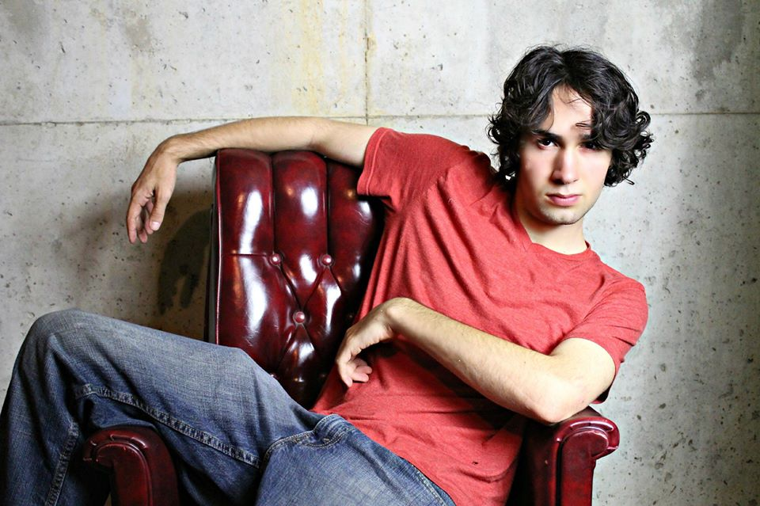

About Me
Owen Essen is an amateur photographer from Chapel Hill, North Carolina. He has been taking photos since getting his first kiddie film camera as a toddler. He gained more sophisticated training in working with cameras while studying film and television at the Savannah College of Art and Design.
The photos on this site are from his recent trip to Europe to visit his sister Elia. Some of them were shot on a Canon 70D, others on an iPhone 5C. (See if you can guess which are which...)